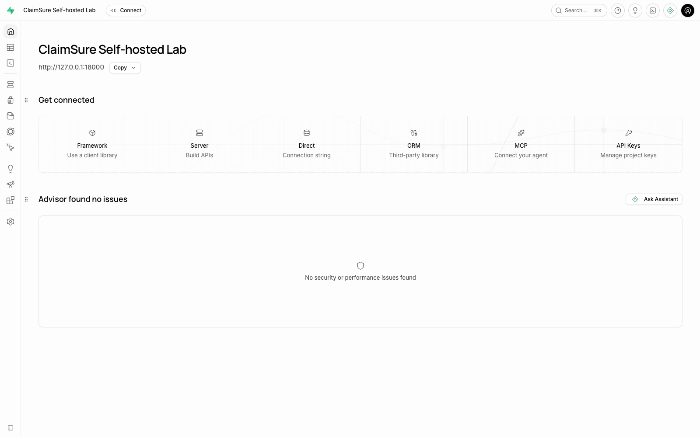
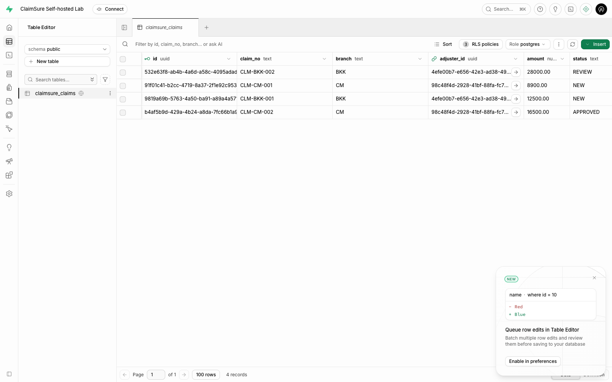
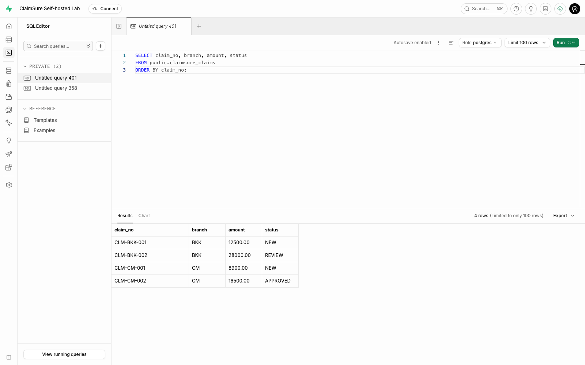
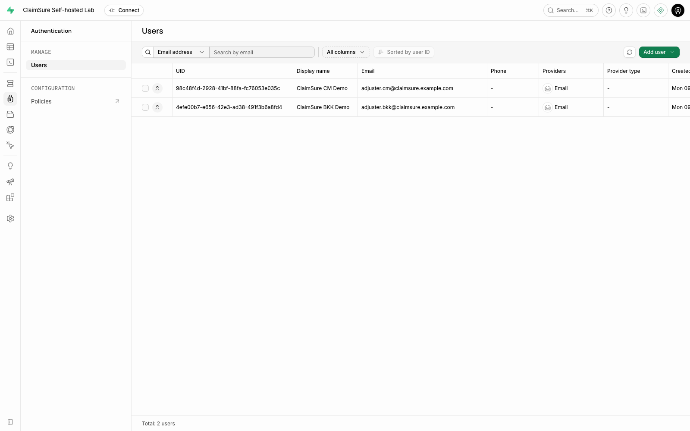
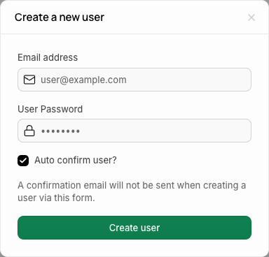
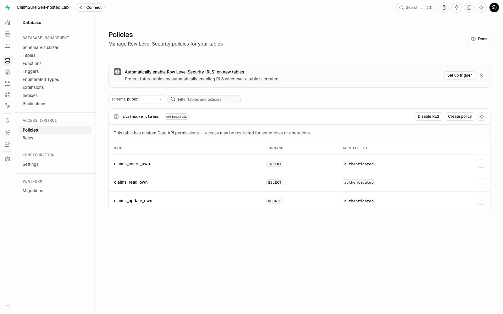
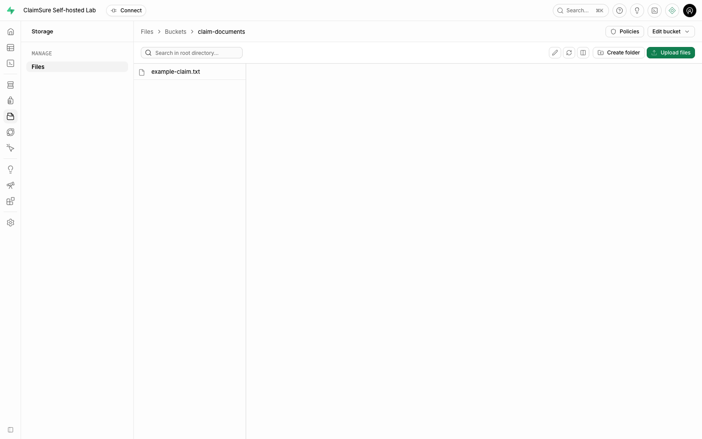
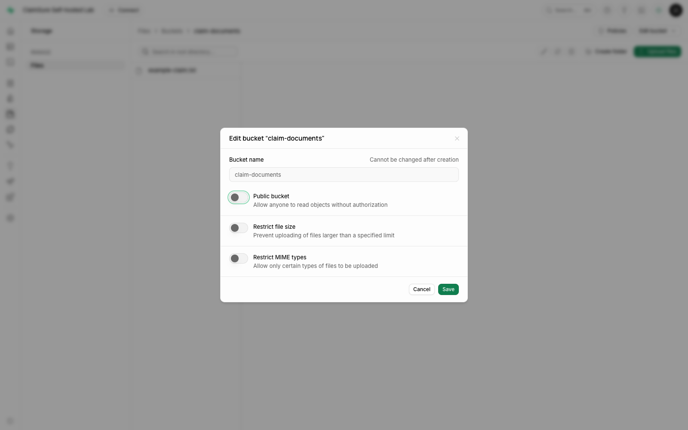

SUPABASE SELF-HOSTED | USER GUIDE
คู่มือใช้งาน Supabase Self-hosted
สำหรับระบบ ClaimSure บน Docker Compose
คู่มืออ้างอิงนี้ครอบคลุมงานดูแลระบบและหัวข้อเสริม สำหรับบทหลักของ Lab 10 ให้เริ่มที่ Data API + Authentication พร้อม curl หรือ HTML lesson
ฉบับ 1.0 | 9 พฤศจิกายน 2026 | ภาษาไทยและศัพท์เทคนิคภาษาอังกฤษ
คู่มือนี้ใช้สำหรับผู้เรียน, Developer และผู้ดูแล Lab ที่ต้องการเข้า Studio จัดการข้อมูล Claim, สร้าง Auth Users และตรวจสิทธิ์ผ่าน Data API ใช้ข้อมูลจำลองของชุด labs/supabase ใน repository นี้
ภาพประกอบมาจาก Studio ที่รันจริงในชุด Lab ชื่อเมนูอ้างอิง Studio 2026.11.02-sha-a05e7ec และ PostgreSQL 17.6.1.136 ไม่ใช่ PostgreSQL 18 ของระบบ Classroom เดิม
ถ้าระบบเปิดอยู่แล้ว: เริ่มที่บท 2 โดยไม่ต้องติดตั้งหรือ seed ซ้ำ หากเพิ่งเปิดครั้งแรกให้ทำบท 1 ก่อน
สารบัญ
1. เตรียมระบบครั้งแรก 2. เข้าใช้งานและเลือกบัญชีให้ถูก 3. รู้จักหน้า Studio 4. ดูและค้นหา Claims ใน Table Editor 5. ใช้ SQL Editor อย่างเป็นลำดับ 6. สร้างและดูแล Auth Users 7. ตรวจและเข้าใจ RLS Policies 8. ใช้ Data API และพิสูจน์สิทธิ์ 9. จัดการไฟล์ด้วย Private Storage 10. เชื่อมต่อด้วย psql หรือ DBeaver 11. เปิด ปิด และปรับค่าระบบ 12. เก็บข้อมูลและสำรองก่อนเปลี่ยนระบบ 13. แก้ปัญหาที่พบบ่อย 14. ตารางใช้งานด่วนและเอกสารอ้างอิง1. เตรียมระบบครั้งแรก
สิ่งที่ต้องมีและตำแหน่งทำงาน
ต้องมี Docker Engine/Desktop พร้อม Compose v2 และ Python 3.10+ ส่วน Node.js 22+ ใช้เฉพาะการสร้างคู่มือ HTML หรือจับภาพด้วย Playwright คำสั่ง Terminal ในคู่มือนี้เริ่มจาก root ของ repository postgres-practices ยกเว้นส่วนที่ระบุ Directory อื่น
ตรวจ Directory และเครื่องมือก่อนเริ่ม:
pwd
docker compose version
python3 --version
ควรเห็น Directory ที่มี labs/supabase/compose.yaml หาก pwd ยังอยู่ใน labs/supabase ให้กลับ root ด้วย cd ../.. ก่อนใช้คำสั่ง python3 labs/supabase/lab.py ...
เปิดระบบครั้งแรกตามลำดับ
ทำใน: Terminal | ผู้ใช้: OS User ที่มีสิทธิ์ใช้ Docker
# 1. สร้างไฟล์ค่าตั้งและ Secrets ของชุดนี้
python3 labs/supabase/lab.py init
# 2. ตรวจ Compose โดยไม่แสดง Secrets
python3 labs/supabase/lab.py config
# 3. ดาวน์โหลด Images ที่ pin เวอร์ชันไว้
python3 labs/supabase/lab.py pull
# 4. เปิด Services และรอ Health Checks
python3 labs/supabase/lab.py up
# 5. สร้างข้อมูลจำลองสำหรับใช้ตามคู่มือ
python3 labs/supabase/lab.py seed --extended
# 6. ทดสอบการเข้าถึงจริงผ่าน APIs
python3 labs/supabase/lab.py verify --extended
ผลที่ควรได้: Services 11 ตัวพร้อมใช้งาน, Auth Users จำลอง 2 ราย, Claims 4 แถว, Private Bucket 1 แห่ง และ Example File 1 ไฟล์ คำสั่ง verify --extended ต้องรายงาน PASS ทั้ง 18 กรณี (บทหลัก Data API/Auth ใช้ verify จำนวน 15 กรณี)
init ไม่เขียนทับ .env ที่มีอยู่แล้ว แต่ seed --extended จะสร้าง/ปรับ Password ของ Demo Users, ตั้ง Grants/Policies ของ Table ตัวอย่าง, คืนค่า Claims ที่มี Claim Number เดิม และอัปโหลด Example File ซ้ำ ใช้เมื่อเตรียม Demo หรือเมื่อตั้งใจคืนข้อมูลตัวอย่าง ไม่ใช้เป็นคำสั่งเปิดระบบประจำวัน
ไฟล์สำคัญอยู่ที่ไหน
| ไฟล์/Directory | ใช้ทำอะไร |
|---|---|
labs/supabase/compose.yaml |
ระบุ Services, Images, Ports และ Volumes |
labs/supabase/.env |
เก็บ URLs, Passwords และ Keys ของเครื่องนี้ |
labs/supabase/lab.py |
ตัวช่วยเปิดระบบ, Seed และทดสอบ |
labs/supabase/sql/01-claims-schema.sql |
สร้าง Table, Grants และ RLS Policies |
labs/supabase/sql/02-demo-claims.sql |
เพิ่ม Claims โดยค้น Auth User UUID จาก Email |
labs/supabase/volumes/functions/ |
Source ของ Edge Functions |
ไฟล์ .env ถูกสร้างด้วยสิทธิ์ 0600 ให้เก็บเป็นความลับและสำรองไว้กับข้อมูลของ Deployment ไม่ลบแล้วสร้าง Secrets ใหม่ทับข้อมูลใน Volumes เดิม
2. เข้าใช้งานและเลือกบัญชีให้ถูก
เปิดใช้งานในวันถัดไป
ทำใน: Terminal | ผู้ใช้: OS User ที่ใช้ Docker
python3 labs/supabase/lab.py status
# ถ้ายังไม่เปิด หรือเคย stop/down ให้ใช้:
python3 labs/supabase/lab.py up
จากนั้นเปิด Browser ที่ http://127.0.0.1:18000 และกรอก Basic Auth จาก .env:
| ช่องที่ถาม | ค่าที่ใช้ |
|---|---|
| Username | ค่า DASHBOARD_USERNAME ค่าเริ่มต้นคือ claimsure |
| Password | ค่า DASHBOARD_PASSWORD ที่ init สร้างให้ |
ผลที่ควรได้: หน้า Project Overview ชื่อ ClaimSure Self-hosted Lab ดังภาพในบท 3
บัญชีสามประเภทนี้ใช้คนละงาน
| ต้องการทำอะไร | บัญชี/Role | Password หรือ Key |
|---|---|---|
| เปิด Studio ผ่าน Browser | Dashboard Basic Auth User | DASHBOARD_PASSWORD |
| ทำ SQL ใน Studio | Role postgres ภายใน Project |
Studio จัดการ Connection ให้ |
| ต่อจาก psql/DBeaver ผ่าน Pooler | postgres.claimsure |
POSTGRES_PASSWORD |
| Sign-in เป็นผู้ใช้ Application | Email ใน Authentication | Password ของ Auth User; Demo ใช้ DEMO_PASSWORD |
| เรียก Data API ในฐานะผู้ใช้ | Role authenticated ที่ได้จาก User JWT |
ANON_KEY + User Access Token |
| ทำ Admin API จาก Trusted Backend | service_role |
SERVICE_ROLE_KEY ใช้ฝั่ง Server เท่านั้น |
Auth User ไม่ใช่ Database Role การเพิ่ม Email ใน Authentication ไม่ต้องสั่ง CREATE ROLE ใหม่ และการ Login เข้า Studio ไม่ได้ทำให้ Browser เป็น Auth User ของ Application
ใช้งานเมื่อ Docker อยู่บน Server
ค่าตั้งต้นเปิด Ports บน 127.0.0.1 ของ Docker Host ถ้า Browser อยู่คนละเครื่อง ให้รันคำสั่งนี้บนเครื่องที่ใช้ Browser แล้วคงหน้าต่าง SSH ไว้:
ssh -L 18000:127.0.0.1:18000 your-user@your-server
แทนชื่อ User/Server ด้วยค่าจริง จากนั้นเปิด http://127.0.0.1:18000 ที่เครื่องตนเอง ถ้า Tunnel ใช้ Local Port อื่น ต้องคำนึงถึง Public URLs ที่ Studio/Client ใช้ด้วย
3. รู้จักหน้า Studio
Self-hosted ชุดนี้มีหนึ่ง Project ให้ใช้งาน ไม่ต้องสร้าง Organization หรือ Project แบบ Supabase Cloud

ภาพ 1: แถบด้านซ้ายเป็นเมนูหลัก บางหน้าจอแสดงเป็น Icons ให้เลื่อน Mouse ค้างเพื่อดูชื่อเมนู ส่วนชื่อ Project อยู่ด้านบน
| เมนู | งานที่ใช้บ่อย | ควรรู้อะไรก่อนใช้ |
|---|---|---|
| Project Overview | ตรวจ Project และ URL ที่เชื่อมต่อ | URL นี้เป็นของชุด Lab ตนเอง |
| Table Editor | ดู, กรอง, เพิ่ม และแก้ข้อมูลแบบตาราง | ทำงานด้วยสิทธิ์ Admin ได้ จึงอาจเห็นทุกแถว |
| SQL Editor | รัน Query และคำสั่งจัดการ Database | ตรวจ Role และ SQL ที่จะรันก่อนกด Run |
| Database / Policies | ดูโครงสร้างและ RLS Policies | Table Grants และ Policies มีหน้าที่ต่างกัน |
| Authentication / Users | สร้างและตรวจ Auth Users | ใช้ตัวตนนี้ในการ Sign-in ของแอป |
| Storage / Files | จัดการ Buckets และ Objects | Private Bucket ต้องมีสิทธิ์อ่านไฟล์แยกต่างหาก |
| Edge Functions | ดู Source ของ Server-side Functions | claimsure-health เป็นตัวอย่างของชุดนี้ |
การทดสอบว่า Application ถูกจำกัดสิทธิ์จริงต้องเรียก Data API ด้วย JWT ของ Auth User ตามบท 8 ไม่ตัดสินจากจำนวนแถวที่ Admin เห็นใน Studio
4. ดูและค้นหา Claims ใน Table Editor
ทำใน: Browser / Studio | บัญชี: Dashboard Admin
เปิดข้อมูลและตรวจจำนวนแถว
- เปิด Table Editor ที่แถบซ้าย
- เลือก Schema เป็น public
- เลือก Table claimsure_claims
- ตรวจว่าแสดงข้อมูล 4 รายการ และมี Column
claim_no,branch,adjuster_id,amount,status

ภาพ 2: adjuster_id คือ UUID ที่เชื่อมแถวนี้กับ auth.users ส่วนปุ่ม RLS policies ใช้เปิดดู Policies ของ Table ได้
| Claim Number | Branch | Amount | Status |
|---|---|---|---|
| CLM-BKK-001 | BKK | 12,500.00 | NEW |
| CLM-BKK-002 | BKK | 28,000.00 | REVIEW |
| CLM-CM-001 | CM | 8,900.00 | NEW |
| CLM-CM-002 | CM | 16,500.00 | APPROVED |
กรองและเรียงข้อมูล
- ใช้ช่อง Filter/Search เหนือตาราง แล้วระบุ Column/เงื่อนไขที่ต้องการ
- ถ้าต้องการดูงาน BKK ให้ตั้ง
branchเท่ากับBKK - ใช้ Sort เพื่อเรียง
claim_noหรือamount - เมื่อต้องการกลับมาดูทั้งหมด ให้ล้าง Filters
ผลที่ควรได้: กรอง BKK แล้วเหลือ 2 แถว การกรองใน Studio เป็นเครื่องมือค้นข้อมูล ไม่ใช่การตั้ง Security Policy
เมื่อต้องแก้ข้อมูลจริงผ่านหน้าตาราง
เลือก Cell/Row ที่ต้องการ แก้ค่า แล้วตรวจหน้าจอยืนยันหรือคิวบันทึกก่อน Commit การเปลี่ยนแปลง วิธี Save ขึ้นกับการเปิดใช้ Row Edit Queue ของ Studio ให้ Refresh และ Query แถวนั้นซ้ำเพื่อยืนยัน
สำหรับการฝึกแก้ข้อมูลตามคู่มือนี้ ให้ใช้ Transaction แบบ ROLLBACK ในบท 5 แทน เพื่อไม่เปลี่ยนข้อมูลตั้งต้นที่การทดสอบ API คาดหวัง
5. ใช้ SQL Editor อย่างเป็นลำดับ
ทำใน: Browser / SQL Editor | Role: postgres
เปิด Query ใหม่และอ่านข้อมูล
- เปิด SQL Editor
- กดปุ่ม + / New query
- ตรวจ Role ที่มุมบนขวาว่าเป็น
postgres - วาง SQL ด้านล่างทั้ง Block แล้วกด Run หรือ Shortcut ที่ปุ่มแสดง เช่น
Cmd+Enterบน macOS
-- START: ตรวจข้อมูล Claims ทั้งหมด
SELECT claim_no, branch, amount, status
FROM public.claimsure_claims
ORDER BY claim_no;
-- END

ภาพ 3: ผลลัพธ์อยู่ด้านล่าง ต้องเห็น 4 แถว ถ้า Claim Number ถูกตัด ให้ลากขอบหัว Column claim_no ให้กว้างขึ้น
Query งานที่ต้อง Review
-- START: อ่านอย่างเดียว
SELECT claim_no, amount, status
FROM public.claimsure_claims
WHERE branch = 'BKK'
AND status = 'REVIEW'
ORDER BY claim_no;
-- END
ผลตั้งต้น: CLM-BKK-002 จำนวนเงิน 28,000.00
ฝึก UPDATE โดยคืนค่าท้าย Block
ให้เลือกและรัน ทั้ง Block ตั้งแต่ BEGIN ถึง ROLLBACK ไม่รันค้างไว้เพียงครึ่งเดียว:
-- START: ทดลองแก้ใน Transaction แล้วคืนค่า
BEGIN;
UPDATE public.claimsure_claims
SET status = 'REVIEW'
WHERE claim_no = 'CLM-BKK-001'
RETURNING claim_no, status;
ROLLBACK;
-- END
RETURNING แสดงค่าระหว่าง Transaction เป็น REVIEW ส่วน ROLLBACK คืนข้อมูล หลังจากนั้นให้รัน SELECT แถวดังกล่าวอีกครั้ง ต้องกลับเป็น NEW ถ้ามี Error แล้ว Session ค้างใน Transaction ให้รัน ROLLBACK; ก่อนเริ่มงานใหม่
สร้าง Table/Policies เมื่อทำแบบ Manual
ใช้ไฟล์ 01-claims-schema.sql ทั้งไฟล์ ก่อนสร้าง Claims ตามด้วยการสร้าง Auth Users ในบท 6 และรัน 02-demo-claims.sql ทั้งไฟล์ตามลำดับ หากรัน seed แล้วไม่ต้องสร้างซ้ำเพื่อใช้งานตามบทนี้
6. สร้างและดูแล Auth Users
ทำใน: Browser / Authentication | บัญชี: Dashboard Admin
ตรวจ Users ที่มีอยู่
เปิด Authentication > Users ต้องเห็น Demo Users สองรายดังภาพ:

| เป็นผู้รับผิดชอบข้อมูลชุดใด | |
|---|---|
adjuster.bkk@claimsure.example.com |
CLM-BKK-001 และ CLM-BKK-002 |
adjuster.cm@claimsure.example.com |
CLM-CM-001 และ CLM-CM-002 |
ภาพ 4: UID เป็น UUID ของ Auth User ที่นำไปใช้ใน adjuster_id ไม่ใช่ชื่อ Database Role ตัวอย่างนี้จำกัดสิทธิ์ราย User ไม่ใช่สิทธิ์ร่วมทั้ง Branch
เพิ่ม User ใหม่จาก Studio
- กด Add user > Create new user
- ใส่ Email ที่ต้องการใช้ทดสอบ และ Password สำหรับ User นั้น
- ใน Lab ให้เปิด Auto confirm user? เพื่อสร้างบัญชีที่ยืนยันแล้ว โดยไม่ต้องส่ง Email
- ตรวจข้อมูลแล้วกด Create user
- กลับรายการ Users และตรวจว่า Email/UID ใหม่ปรากฏ

ภาพ 5: ภาพเป็นฟอร์มว่าง ไม่มี Password จริงของระบบ หลีกเลี่ยงการสร้าง Email เดิมซ้ำ ถ้าเป็น Demo Users ที่มีอยู่แล้วให้เปิดดูข้อมูลเดิม
เมื่อ User ใหม่ยังไม่เห็น Claims
เป็นผลปกติเพราะยังไม่มีแถวที่ adjuster_id ตรงกับ UID ของคนนั้น ให้ Admin สร้างหรือกำหนดแถวธุรกิจให้ตรงกับ User ที่ถูกต้อง แล้วทดสอบด้วย User JWT ใหม่ตามบท 8
Password และการลบ User
- Demo Users ใช้ Password ที่เก็บใน
DEMO_PASSWORDของ.envอย่านำ Dashboard Password ไปใช้ Sign-in แทน - การส่ง Invitation หรือ Reset Password Email ต้องตั้ง SMTP จริง ชุด Lab นี้ยังไม่ได้ตั้ง Email Delivery
seedตั้ง Password ของ Demo Users กลับเป็นDEMO_PASSWORDและคืนข้อมูล Demo จึงใช้เฉพาะเมื่อตั้งใจ Reset Demo- หากจะลบ User ให้ตรวจแถวใน
claimsure_claimsที่อ้างถึง UID ก่อน Table นี้มี Foreign Key จึงอาจปฏิเสธการลบขณะที่ยังมี Claims อ้างถึง
7. ตรวจและเข้าใจ RLS Policies
ทำใน: Browser / Database > Policies หรือ SQL Editor | บัญชี: Dashboard Admin
เปิด Database > Policies เลือก Schema public แล้วค้นหา claimsure_claims ตรวจว่าปุ่มแสดง Disable RLS ซึ่งหมายความว่า RLS กำลังเปิดอยู่ ไม่ต้องกดปุ่มนี้

ภาพ 6: มี 3 Policies สำหรับ Role authenticated
| Policy | Operation | กฎที่บังคับ |
|---|---|---|
claims_read_own |
SELECT | อ่านเฉพาะแถวที่ adjuster_id = auth.uid() |
claims_insert_own |
INSERT | แถวใหม่ต้องระบุ Owner เป็น User ที่ Sign-in |
claims_update_own |
UPDATE | เลือกเฉพาะแถวของตน และค่าหลังแก้ต้องยังเป็นของตน |
แยก Grants กับ Policies
Table Grants บอกว่า Role ใช้ Operation ใดได้ ส่วน RLS บอกว่า Operation นั้นใช้กับแถวใด ในชุดนี้:
| Role | Table Grants | ผลของ RLS |
|---|---|---|
anon |
SELECT | ไม่มี Policy อนุญาต จึงอ่านได้ศูนย์แถว |
authenticated |
SELECT, INSERT, UPDATE | เข้าถึงเฉพาะแถวของตน |
service_role |
Admin Operations | ใช้ข้าม RLS จึงเก็บ Key เฉพาะฝั่ง Server |
ไม่มี DELETE Grant ให้ผู้ใช้แอปใน Lab นี้
ตรวจ Policy ด้วย Query แบบอ่านอย่างเดียวได้:
SELECT policyname, cmd, roles, qual, with_check
FROM pg_policies
WHERE schemaname = 'public'
AND tablename = 'claimsure_claims'
ORDER BY policyname;
ทำไมภาพมีป้าย API DISABLED
Studio รุ่นที่ใช้แสดงป้าย API DISABLED พร้อมข้อความ custom Data API permissions เมื่อ Grants ไม่ครบชุดมาตรฐาน แม้บาง Operations ยังเรียกได้ ชุดนี้จำกัด Grants โดยตั้งใจ ให้ตรวจ Grants และผล HTTP จริงในบท 8 ไม่เพิ่ม GRANT ALL ให้ Anonymous เพื่อเปลี่ยนป้าย
ก่อนแก้ Policy
บันทึกนิยามเดิม, ระบุ User/Operation ที่ต้องอนุญาต และทดสอบทั้งกรณีของตนกับของคนอื่น ใช้ USING ตรวจแถวที่เข้าถึง และ WITH CHECK ตรวจค่าหลัง INSERT/UPDATE การปิด RLS เพื่อให้ Request ผ่านจะเปลี่ยนขอบเขตการเข้าถึงข้อมูล
8. ใช้ Data API และพิสูจน์สิทธิ์
ทำใน: Terminal หรือ HTTP Client | ตัวตนที่ทดสอบ: Auth User ของแอป
ทดสอบครบชุดด้วยคำสั่งเดียว
python3 labs/supabase/lab.py verify --extended
ผลที่ควรได้: PASS 18 กรณีเมื่อใช้ --extended รายละเอียดถูกเขียนลง verification.json โดยไม่บันทึก Passwords หรือ Tokens การตรวจสร้างแถวชั่วคราวของตนและลบเมื่อจบ เพื่อรักษาข้อมูล Demo 4 แถว
| กรณี | ผลตั้งต้นที่ถูกต้อง |
|---|---|
| Anonymous อ่าน Claims | HTTP 200 และ [] |
| BKK อ่าน Claims | เห็นเฉพาะ 2 แถวของ BKK User |
| CM อ่าน Claims | เห็นเฉพาะ 2 แถวของ CM User |
| BKK กรองหา Claims ของ CM | HTTP 200 และ [] |
| BKK INSERT โดยใส่ CM เป็น Owner | HTTP 403 |
| BKK INSERT โดยใส่ตนเป็น Owner | HTTP 201 |
| BKK เปลี่ยน Owner ของแถวตนเป็น CM | HTTP 403 |
| Admin อ่าน Private Example File | HTTP 200 และเนื้อหาตรงกับ Fixture |
| Anonymous อ่าน Private Example File | ถูกปฏิเสธ อาจตอบ 400/401/403/404 |
เรียก claimsure-health ด้วย JWT ถูกต้อง |
HTTP 200 |
เข้าใจ Request ก่อนส่งเอง
ตั้งตัวแปรใน HTTP Client โดยอ่านค่าจาก .env ของตนเอง:
| Variable | ค่า |
|---|---|
base_url |
http://127.0.0.1:18000 หรือ URL ที่ตั้งไว้ |
anon_key |
ANON_KEY ของชุดนี้ |
demo_email |
Email ของ BKK หรือ CM User |
demo_password |
DEMO_PASSWORD สำหรับ Demo Users |
ตัวอย่างต่อไปนี้เป็นรูปแบบ Request สำหรับ HTTP Client ให้แทน {{...}} ด้วย Variables จริง ไม่ใช่คำสั่งที่ Paste ลง psql
ขั้น A: Sign-in เพื่อรับ User Access Token
POST {{base_url}}/auth/v1/token?grant_type=password
apikey: {{anon_key}}
Content-Type: application/json
{
"email": "{{demo_email}}",
"password": "{{demo_password}}"
}
เมื่อได้ HTTP 200 ให้นำค่า access_token ไปใช้เป็น user_access_token ส่วน user.id คือ UID ที่ Policies ใช้เทียบกับ adjuster_id เก็บ Access/Refresh Tokens ไว้เป็นความลับ
ขั้น B: อ่าน Claims ด้วยตัวตนของ User
GET {{base_url}}/rest/v1/claimsure_claims?select=claim_no,branch,amount,status&order=claim_no
apikey: {{anon_key}}
Authorization: Bearer {{user_access_token}}
Sign-in ด้วย BKK จะได้สองแถวของ BKK เมื่อลอง Sign-in เป็น CM แล้วใช้ Token ใหม่ต้องได้สองแถวของ CM
ขั้น C: ลองกรองหาข้อมูลของอีกคน
เพิ่ม &branch=eq.CM ใน URL ขณะใช้ Token ของ BKK ต้องได้ [] ไม่ใช่ข้อมูลของ CM HTTP 200 เพียงอย่างเดียวจึงยังบอกไม่ได้ว่าได้ข้อมูลที่ต้องการหรือไม่ ต้องดู Response Body ด้วย
ANON_KEY ใช้ระบุ API Access ของ Project ส่วน User JWT ใช้ระบุตัวตน Request นี้ไม่ต้องใช้ Dashboard Basic Auth หรือ POSTGRES_PASSWORD ห้ามนำ SERVICE_ROLE_KEY ไปใส่ Frontend เพื่อเลี่ยง RLS
9. จัดการไฟล์ด้วย Private Storage
ทำใน: Browser / Storage | บัญชี: Dashboard Admin
เปิด Bucket และอัปโหลดไฟล์
- เปิด Storage > Files
- เลือก Bucket claim-documents ถ้า
seed --extendedแล้วจะมีอยู่ก่อน - ตรวจว่ามี
example-claim.txt - ถ้าต้องการอัปโหลดไฟล์ทดสอบเพิ่มเติม ให้กด Upload files และเลือกไฟล์ข้อมูลจำลอง
- ตรวจว่าชื่อไฟล์ปรากฏในรายการหลัง Upload สำเร็จ

ภาพ 7: ไฟล์ตั้งต้นมาจาก labs/supabase/fixtures/example-claim.txt ถ้าจะรันตามข้อมูลตั้งต้น ใช้ชื่อและเนื้อหาไฟล์นี้ตามเดิม
สร้าง Bucket ใหม่เมื่อทำแบบ Manual
เลือก New bucket, ใส่ชื่อที่ไม่ซ้ำ, ตั้ง Public bucket = OFF แล้วสร้าง Bucket ก่อน Upload หาก Bucket claim-documents มีอยู่แล้วให้เปิดของเดิม
ตรวจว่า Bucket ยังเป็น Private
- เปิด Bucket
claim-documents - เลือก Edit bucket > Bucket settings
- ตรวจว่า Public bucket ปิดอยู่ดังภาพ
- ถ้าไม่ได้แก้ค่า ให้กด Cancel

ภาพ 8: การปิด Public ไม่ได้แปลว่า Auth User ทุกคนอ่านไฟล์ได้ ผู้ใช้แอปยังต้องมี Storage Policies หรือใช้ Signed URL ที่ออกหลังตรวจสิทธิ์แล้ว
แยกสิทธิ์ไฟล์ออกจากสิทธิ์ Claims
Policy บน public.claimsure_claims ไม่ได้ให้สิทธิ์บน storage.objects โดยอัตโนมัติ ชุด Lab ให้ Admin จัดการไฟล์และทดสอบว่า Anonymous ดาวน์โหลดไม่ได้ ถ้าจะให้ผู้ใช้แอป Upload/Download ให้กำหนด Object Path และ Policies เพิ่มตามงานจริง
อย่าลบแถวจาก storage.objects โดยตรงเพื่อจัดการไฟล์ ให้ใช้ Storage UI หรือ Storage API เพื่อให้ Metadata และไฟล์สอดคล้องกัน
10. เชื่อมต่อด้วย psql หรือ DBeaver
ใช้ psql ภายใน Container
ทำใน: Terminal | Database Role: postgres
python3 labs/supabase/lab.py psql
เมื่อเห็น Prompt ของ psql จึงค่อยรัน:
SELECT current_user, current_database();
SELECT count(*) FROM public.claimsure_claims;
ผลที่ควรได้: User postgres, Database postgres และ Count เท่ากับ 4 สำหรับข้อมูลตั้งต้น
คำสั่ง psql ที่ใช้บ่อย:
\conninfo ดู Connection ปัจจุบัน
\dt public.* ดู Tables ใน Schema public
\c postgres Reconnect ไป Database postgres
\q ออกจาก psql กลับ Terminal
เชื่อมจากเครื่อง Host ผ่าน Session Pooler
psql -X -h 127.0.0.1 -p 15480 -U postgres.claimsure -d postgres -W
เมื่อถาม Password ให้ใช้ POSTGRES_PASSWORD ถ้ากำหนด Ports หรือ Tenant ID ใหม่ให้แทนค่าตาม .env
| ช่องใน DBeaver | Session Mode | Transaction Mode |
|---|---|---|
| Host | 127.0.0.1 |
127.0.0.1 |
| Port | 15480 |
16543 |
| Database | postgres |
postgres |
| Username | postgres.claimsure |
postgres.claimsure |
| Password | POSTGRES_PASSWORD |
POSTGRES_PASSWORD |
เริ่มงาน SQL ที่ต้องพึ่ง Session State ด้วย Session Mode ก่อน Transaction Mode อาจคืน Backend Connection ให้ Pool หลังจบ Transaction จึงไม่ควรสมมติว่า Session Settings จะอยู่บน Connection เดิมตลอด
11. เปิด ปิด และปรับค่าระบบ
คำสั่งงานประจำ
| งาน | คำสั่งจาก root ของ repository | ผลกับข้อมูล |
|---|---|---|
| ดูสถานะ | python3 labs/supabase/lab.py status |
อ่านอย่างเดียว |
| เปิด/เปิดใหม่ | python3 labs/supabase/lab.py up |
ใช้ Volumes เดิม |
| รอความพร้อม | python3 labs/supabase/lab.py wait |
ไม่แก้ข้อมูล |
| หยุดชั่วคราว | python3 labs/supabase/lab.py stop |
เก็บ Containers และ Volumes |
| ถอด Containers/Network | python3 labs/supabase/lab.py down |
Named Volumes ยังอยู่ |
| คืน Demo | python3 labs/supabase/lab.py seed --extended |
ปรับข้อมูลตัวอย่างและ Demo Passwords |
แก้ค่าที่ไหน และทำอย่างไรให้มีผล
ค่าของชุดนี้อยู่ใน labs/supabase/.env ให้แก้ไฟล์นี้โดยคง Secrets เดิม แล้วรัน config และ up เพื่อให้ Compose Recreate Services ที่ Environment เปลี่ยน การ restart อย่างเดียวไม่โหลด Environment ใหม่
| ค่าที่แก้ | ตัวแปร | สิ่งที่ต้องทำร่วมกัน |
|---|---|---|
| Host Port ของ Studio/API | API_GW_HTTP_PORT |
ปรับ SUPABASE_PUBLIC_URL และ API_EXTERNAL_URL ให้ตรง แล้ว up |
| Host Port ของ Session Pooler | DB_SESSION_PORT |
เปลี่ยน Port ของ SQL Client แล้ว up |
| Host Port ของ Transaction Pooler | DB_TRANSACTION_PORT |
เปลี่ยน Port ของ SQL Client แล้ว up |
| URL ของ Frontend/Redirect | SITE_URL, ADDITIONAL_REDIRECT_URLS |
ให้ตรงกับ Application แล้ว up |
| SMTP | SMTP_* |
ใส่ค่าจาก Mail Provider และทดสอบ Email Delivery หลัง up |
คง POSTGRES_PORT=5432 ไว้เป็น Port ภายใน Network อย่าเปลี่ยนค่านี้เพียงเพื่อแก้ Host Port ชนกัน
สำหรับ POSTGRES_PASSWORD, JWT Signing Keys และ Encryption Keys ให้ทำตามขั้นตอนเปลี่ยน Credential ของ Upstream โดยเฉพาะ การแก้ Environment อย่างเดียวไม่เปลี่ยน Passwords/Keys ที่ข้อมูลเดิมใช้อยู่
12. เก็บข้อมูลและสำรองก่อนเปลี่ยนระบบ
สิ่งที่ต้องเก็บเป็นชุดเดียวกัน
| รายการ | เก็บที่ไหนในชุดนี้ | เหตุผล |
|---|---|---|
| Tables, Auth Records, Policies | Named Volume db-data |
เป็นข้อมูลและโครงสร้างหลัก |
| Database Encryption Configuration | Named Volume db-config |
ใช้ร่วมกับข้อมูล Database |
| Storage Objects | Named Volume storage-data |
ไฟล์จริงไม่อยู่ใน Table Dump ทั้งหมด |
| Deployment Secrets | labs/supabase/.env |
ต้องสอดคล้องกับข้อมูล/Encryption Keys |
| Functions และ Snippets | labs/supabase/volumes/ |
เป็น Source และ SQL ที่บันทึกไว้ |
ชื่อจริงของ Named Volume มี Compose Project Name นำหน้า เช่น claimsure-supabase_db-data การ stop หรือ down ของ Helper ไม่ลบ Named Volumes ส่วน down -v หรือการลบ Volume เองอาจทำให้ข้อมูลหาย
ตัวอย่าง Dump เฉพาะ Table Lab
คำสั่งนี้สำรองเฉพาะ claimsure_claims เพื่อฝึกดู Archive ไม่ใช่ Backup ของ Supabase Project ทั้งชุด
ทำใน: Terminal จาก labs/supabase
cd labs/supabase
mkdir -p artifacts/backups
docker compose --env-file .env -f compose.yaml exec -T db \
pg_dump -U postgres -d postgres -Fc \
-t public.claimsure_claims \
> artifacts/backups/claimsure-claims.dump
# แสดงสารบัญของ Archive โดยยังไม่ Restore
docker compose --env-file .env -f compose.yaml exec -T db \
pg_restore --list < artifacts/backups/claimsure-claims.dump
# กลับ root เมื่อต้องใช้ Helper ตามบทอื่น
cd ../..
ตรวจ Exit Status และสารบัญทุกครั้ง ไฟล์ Dump ที่มีขนาดมากกว่าศูนย์อย่างเดียวไม่ได้ยืนยันว่า Restore ได้ การนำ Table นี้ไป Restore ต้องมี Auth User UUID ที่อ้างถึงอยู่ด้วย
ก่อน Upgrade/ย้ายเครื่อง ให้เตรียม Backup ที่ครอบคลุม Database, Storage และ Secrets พร้อมทดสอบ Restore แยกจากระบบต้นทาง ไม่คัดลอก PGDATA ขณะ Database ทำงานเพื่อถือเป็น Backup ที่สมบูรณ์
13. แก้ปัญหาที่พบบ่อย
ดู Logs ให้ตรง Service
ทำใน: Terminal จาก labs/supabase
cd labs/supabase
docker compose --env-file .env -f compose.yaml ps
docker compose --env-file .env -f compose.yaml logs --tail=80 db
docker compose --env-file .env -f compose.yaml logs --tail=80 auth rest meta
docker compose --env-file .env -f compose.yaml logs --tail=80 api-gw studio
cd ../..
| อาการ | ตรวจอะไร | แนวทางแก้ |
|---|---|---|
| เข้า Studio ไม่ได้ | Docker/Services, URL, SSH Tunnel | รัน status แล้ว up; ตรวจ Host Port |
| Browser ถาม Basic Auth ซ้ำ | Dashboard Username/Password | ใช้ค่าจาก .env; ทดลอง Incognito ถ้า Browser จำค่าเก่า |
port is already allocated |
Host Ports ชนโปรแกรมอื่น | เปลี่ยน Host Ports และ URLs ที่เกี่ยวข้อง แล้ว up |
| Auth Sign-in ไม่ผ่าน | Email, Password, Confirmed State | ใช้ DEMO_PASSWORD สำหรับ Demo และตรวจ Users; seed เฉพาะเมื่อต้องการ Reset Demo |
relation does not exist |
รัน Schema แล้วหรือไม่, Database/Schema ถูกชุดหรือไม่ | ตรวจ Connection; ใช้ SQL 01 ทั้งไฟล์ก่อน SQL 02 |
| Foreign Key Error | adjuster_id มีอยู่ใน auth.users หรือไม่ |
สร้าง Auth User ก่อน และใช้ UID ให้ตรง |
| Data API ได้ 401 | API Key, JWT, Expiry, Signing Key | Sign-in ใหม่และตรวจ Keys ของ Project เดียวกัน |
Data API ได้ [] |
User มีแถวของตนหรือไม่, Policy อนุญาตหรือไม่ | ตรวจ adjuster_id, JWT ของคนที่ใช้ และ RLS |
| INSERT/UPDATE ได้ 403 | Grants และ WITH CHECK |
ตรวจว่ากำลังเขียนให้ Owner ที่ตรงกับ User ไม่ใช้ Service Key กลบปัญหา |
| Studio เห็น 4 แถว แต่ API เห็น 2 | Admin ต่างจาก Application User | เป็นผลที่ตั้งใจของ RLS ใน Demo |
หน้า Policies มี API DISABLED |
ข้อความ Custom Grants และผล HTTP | ดูคำอธิบายในบท 7 ไม่เปิดสิทธิ์เกินจำเป็น |
| Private File ดาวน์โหลดไม่ได้ | ตัวตน, Object Path, Storage Policies | ตรวจผ่าน Storage API/UI และออกแบบสิทธิ์ไฟล์เพิ่มเติม |
/functions/v1/hello ตอบ INVALID_API_KEY |
Example ของ Upstream ใช้ New Opaque Keys | ชุดนี้มี claimsure-health สำหรับ Legacy HS256 Keys |
verify ไม่ผ่านหลังแก้ข้อมูล |
ข้อมูล Demo ต่างจากค่าที่ Test คาดไว้ | ตรวจการเปลี่ยนแปลงก่อน; seed เฉพาะเมื่อตั้งใจคืน Demo |
หากต้องส่ง Logs ให้ผู้อื่น ให้ตัด Passwords, Tokens, Connection Strings และข้อมูลจริงออกก่อน ไม่ส่ง .env ทั้งไฟล์
14. ตารางใช้งานด่วนและเอกสารอ้างอิง
เลือกทางทำงานตามเป้าหมาย
| เป้าหมาย | เปิดที่ไหน/ใช้คำสั่งไหน |
|---|---|
| เข้า Dashboard | http://127.0.0.1:18000 + Dashboard Basic Auth |
| ค้นหา Claim | Table Editor > public > claimsure_claims |
| รัน SELECT/ทดลอง Transaction | SQL Editor โดยตรวจ Role ก่อน |
| เพิ่มตัวตนของผู้ใช้แอป | Authentication > Users > Add user |
| ตรวจสิทธิ์แถว | Database > Policies และทดสอบ User JWT |
| เก็บไฟล์ Claim | Storage > Files > claim-documents |
| ทดสอบครบชุด | python3 labs/supabase/lab.py verify --extended |
| เปิด Console SQL | python3 labs/supabase/lab.py psql |
| หยุดงานวันนี้ | python3 labs/supabase/lab.py stop |
คำศัพท์ที่ควรจำ
| คำศัพท์ | ความหมายในคู่มือนี้ |
|---|---|
| Studio | หน้าจอ Admin ของ Supabase Project |
| Auth User | ตัวตนของผู้ใช้ Application |
| Database Role | Identity/ชุดสิทธิ์ภายใน PostgreSQL |
| JWT / Access Token | Token ยืนยันตัวตนที่ API ตรวจแล้วใช้กำหนดสิทธิ์ |
| RLS | กฎที่ Database ใช้เลือกและตรวจแถวตาม Role/Identity |
USING |
เงื่อนไขสำหรับแถวที่เข้าถึงได้ |
WITH CHECK |
เงื่อนไขที่แถวหลัง INSERT/UPDATE ต้องผ่าน |
| Bucket / Object | กลุ่มเก็บไฟล์ / ไฟล์พร้อม Metadata |
| Pooler | ตัวกลางจัดการและใช้ Database Connections ร่วมกัน |
เอกสารของชุด Lab
- วิธีติดตั้งและโครงสร้างไฟล์
- Tutorial พร้อมภาพและลำดับ Lab
- SQL สร้าง Table และ RLS
- SQL เพิ่ม Claims ตัวอย่าง
- ผลทดสอบ API ที่บันทึกไว้
- รายละเอียดภาพ Tutorial เดิม
- ข้อมูลเวอร์ชัน Upstream
แหล่งอ้างอิงทางการ
คู่มือนี้อธิบายพฤติกรรมของ Compose และ Scripts ใน repository นี้ หากจะเปลี่ยน Deployment หรือย้ายเป็น Public Service ให้ตรวจคู่มือเวอร์ชันที่ใช้ร่วมด้วย:
- Supabase Self-hosting with Docker
- Supabase Row Level Security
- Supabase Storage Access Control
- การเข้าถึง PostgreSQL ของ Self-hosted Supabase
- แนวทางย้ายไปใช้ New Auth/API Keys
ข้อมูลตัวอย่างและภาพใช้เพื่อการเรียนรู้ ไม่มี Password, API Key หรือ Access Token จริงถูกพิมพ์ลงในคู่มือ